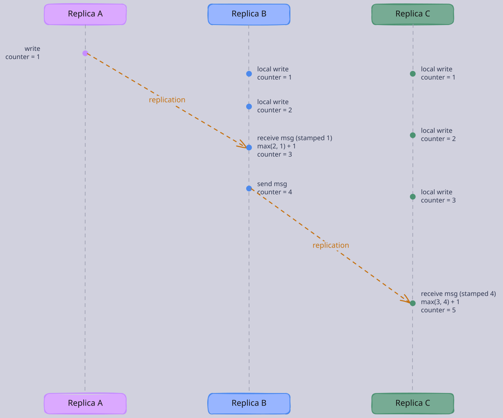
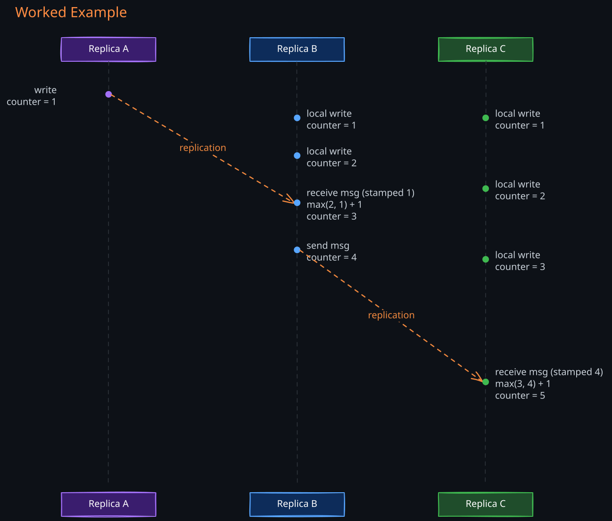
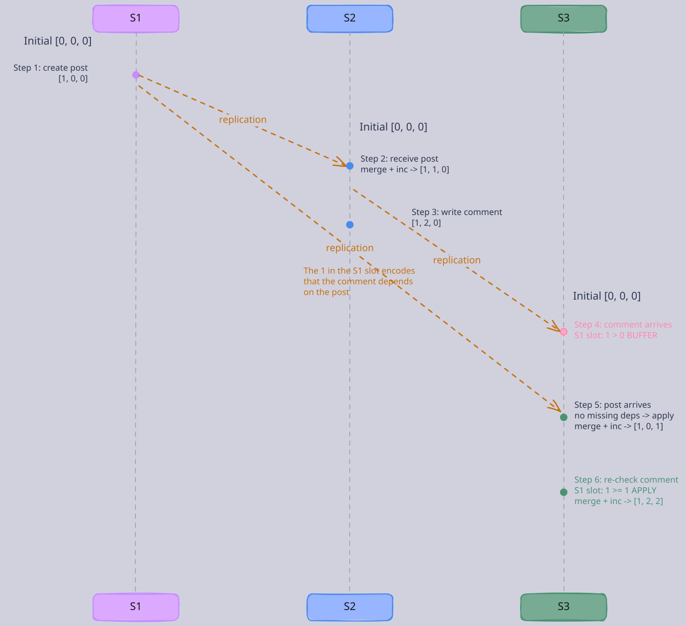
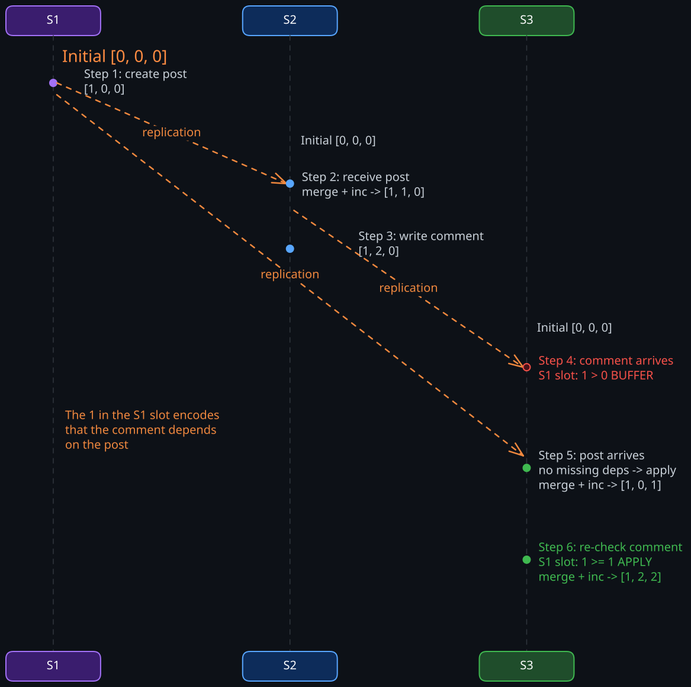

The Story
Lamport’s “happened-before” relation came directly from Einstein’s special relativity — causally unrelated events in a distributed system are analogous to spacelike-separated events in physics, where no signal can travel fast enough to connect them. Lamport wasn’t even a distributed systems researcher at the time. He was working on a bakery algorithm for mutual exclusion and kept hitting the question: “what does it mean for one event to happen before another when there’s no shared clock?” Computer science had no framework for this, so he imported one from physics. His 1978 paper became one of the most cited in CS history.
In a single-process system, ordering events is trivial. The CPU executes instructions sequentially, and every event has an unambiguous position in time. But in a distributed system with multiple nodes communicating over a network, there is no shared global clock. Each node has its own local clock, and these clocks drift apart — sometimes by milliseconds, sometimes by seconds. Even with NTP synchronization, clock skew is unavoidable because network round-trip times are variable and unpredictable.
This creates a fundamental problem: if two events happen on different nodes, how do you determine which happened first? You cannot rely on physical timestamps because Node A’s clock might be ahead of Node B’s clock. An event that “happened earlier” on Node B could have a later physical timestamp than an event on Node A. If you use these timestamps to order events (as in last-writer-wins conflict resolution), you silently lose data — the “later” write overwrites the “earlier” one based on a lie told by drifting clocks.
Logical clocks solve this by abandoning the goal of tracking real time entirely. Instead, they track causality — the relationships between events that matter for correctness. The question shifts from “what time did this happen?” to “could this event have influenced that event?“
1. The Happens-Before Relation
Leslie Lamport formalized the concept of event ordering in distributed systems with the happens-before relation (written as a -> b, meaning “a happens before b”). This relation captures when one event could have causally influenced another:
- Same process: If Alice’s server processes a write and then processes a read, the write happened before the read. Events on the same machine are ordered by the program itself.
- Message passing: If Alice’s server sends a message and Bob’s server receives it, the send happened before the receive. A message cannot arrive before it is sent.
- Transitivity: If event A happened before event B, and event B happened before event C, then A happened before C. Causality chains together.
If neither event could have influenced the other — they happened on different machines with no messages linking them — the events are concurrent. Concurrent does not mean “at the same instant.” It means neither event had any way of knowing about the other. Two users on different continents typing messages independently are concurrent regardless of wall-clock timing.
2. Lamport Clocks
Lamport clocks are the simplest logical clock. The idea is: instead of asking “what time is it?”, each node keeps a simple counter that answers “how many events have I seen so far?“
1. How They Work
Every node in the system keeps an integer counter, starting at 0. Three rules govern this counter:
- Rule 1 — Before doing anything, tick the counter up by one. Whether a node processes a local write, sends a message, or handles a request, it first increments its counter. This ensures every event gets a unique, increasing number on that node.
- Rule 2 — When sending a message, stamp it with the current counter value. The message carries a “logical timestamp” showing where the sender’s counter was at the time of sending.
- Rule 3 — When receiving a message, fast-forward the counter if needed. The receiver looks at the timestamp on the incoming message. If the message’s timestamp is higher than the receiver’s own counter, the receiver jumps its counter forward to match, then increments by one. This ensures the receive event always has a higher counter than the send event.
The fast-forward in Rule 3 is the key insight. Without it, a node with a slow counter could assign a lower number to the receive event than the sender assigned to the send event — which would violate the fact that sending happens before receiving.
2. Worked Example
Imagine three database replicas — Replica A, Replica B, and Replica C — processing writes and exchanging replication messages.
- Replica A processes a write. Counter goes from 0 to 1. It sends a replication message to Replica B, stamped with
timestamp = 1. - Replica B processes two local writes while the message is in flight. Counter goes 0 -> 1 -> 2.
- Replica B receives Replica A’s message (stamped 1). Replica B’s counter is already at 2, which is higher than the message’s timestamp of 1. So it just increments normally: counter becomes 3. The receive event (3) is correctly ordered after the send event (1).
- Replica B sends a replication message to Replica C, stamped with
timestamp = 4(incremented before sending). - Replica C has been processing its own writes and its counter is at 3. It receives the message stamped 4. Since 4 > 3, Replica C fast-forwards to 4, then increments: counter becomes 5.
The guarantee: if event A causally happened before event B, then A’s counter is strictly less than B’s counter. The send of the first message (counter 1) is less than its receipt (counter 3). The send of the second message (counter 4) is less than its receipt (counter 5). Causal ordering is preserved in the counter values.


3. The Critical Limitation
Lamport clocks give a one-way guarantee: if A happened before B, then A’s counter is lower. But the reverse is not true. If A’s counter is lower than B’s counter, you cannot conclude that A happened before B. Two independent events on different nodes can have different counter values purely by coincidence — one node’s counter happened to be higher.
In the example above, Replica A’s write had counter 1 and Replica C’s first local write had counter 1 too. They have the same counter value, but they are completely independent — neither caused the other. Lamport clocks cannot tell you whether two events are causally related or just happened to have certain counter values.
This means Lamport clocks cannot detect concurrency. If you need to know whether two writes conflict because they happened independently (critical for conflict detection in replicated databases), Lamport clocks are insufficient. This limitation motivated vector clocks.
4. Where Lamport Clocks Are Sufficient
Despite this limitation, Lamport clocks work well when you only need a total order and do not need to detect concurrency:
- Consensus protocols (Raft, Paxos): Log entries need a total order. Whether two proposals are concurrent does not matter — the consensus algorithm serializes them.
- Distributed mutual exclusion: Lamport’s original paper showed how to build a distributed lock using these timestamps to order lock requests.
- Log-structured systems: Assigning monotonically increasing sequence numbers to events in a replicated log.
3. Vector Clocks
The core limitation of Lamport clocks is that a single counter loses information. When you see counter values 5 and 3, you cannot tell if 5 “knows about” 3 or if they are independent. Vector clocks fix this by having each node maintain not one counter, but a separate counter for every node in the system.
Think of it as a scoreboard. If there are three servers, every server keeps a scoreboard with three rows — one for each server. Each row tracks: “the latest event from that server that I know about.”
1. The Scoreboard Rules (Clock Maintenance)
In a system with three servers (S1, S2, S3), each server maintains a vector of three counters:
S1's scoreboard: [S1's events: ?, S2's events: ?, S3's events: ?]
S2's scoreboard: [S1's events: ?, S2's events: ?, S3's events: ?]
S3's scoreboard: [S1's events: ?, S2's events: ?, S3's events: ?]
Three rules govern how these scoreboards are maintained:
Rule 1 — Before doing anything, increment your own row. When S1 processes an event, it increments only the “S1’s events” entry in its own scoreboard. The other entries stay the same — S1 has not learned anything new about S2 or S3.
Rule 2 — When sending a message, attach the entire scoreboard. The message carries a snapshot of everything the sender currently knows about all servers.
Rule 3 — When receiving a message, merge the scoreboards, then increment your own row. For each row, take the higher value between your scoreboard and the message’s scoreboard. This absorbs everything the sender knew. Then increment your own row (because receiving is itself an event).
The merge is the key operation. After merging, the receiver’s scoreboard reflects everything it has seen plus everything the sender had seen. Causal knowledge only grows — it never shrinks.
2. The Causal Delivery Condition (Enforcing Order)
The three rules above tell you how to maintain scoreboards. But they do not tell you when it is safe to apply an incoming event. This is the critical piece that makes vector clocks useful for enforcing causal ordering in replicated systems.
The problem: messages can arrive out of order. A replication message for a comment might arrive at a server before the replication message for the post it refers to. If the server blindly applies the comment, users see a comment without its post — a causal violation.
Vector clocks solve this with a delivery condition that must be checked before applying the merge rules:
Rule 4 — Before applying an incoming event, check that you have all its causal dependencies. When a server receives a message with scoreboard V_msg from sender S, it checks: for every row other than the sender’s own row, is my local scoreboard value >= the message’s value?
- If yes for all rows: the server has already seen everything this event depends on. Safe to apply — proceed with the merge (Rule 3).
- If no for any row: the server is missing a causal dependency. Buffer the event and wait. Do not apply it yet. When new events arrive and the server’s scoreboard advances, re-check buffered events.
Why this works: the non-sender entries in the message’s scoreboard represent everything the sender had seen from other servers before creating this event. If the sender’s scoreboard says [1, ?, 0] (where ? is the sender’s own row), the 1 in the S1 slot means the sender had already seen 1 event from S1 when it created this event. If the receiver has seen 0 events from S1, the receiver is missing something the sender’s event depends on. Applying the event now would violate causal order.
3. Worked Example: Enforcing Causal Order (Post and Comment)
Three servers (S1, S2, S3) in a replicated social media system. Each maintains a scoreboard [S1_count, S2_count, S3_count], starting at [0, 0, 0].
Step 1 — A user creates a post on S1. S1 increments its own row:
- S1’s scoreboard:
[1, 0, 0]— “I have done 1 event. I know nothing about S2 or S3.” - S1 sends replication messages to S2 and S3, carrying
[1, 0, 0].
Step 2 — S2 receives the post from S1 (carrying [1, 0, 0]):
- Delivery check: look at every row except the sender’s (S1’s) own row. S2’s row in the message is
0, S3’s row is0. S2’s local scoreboard is[0, 0, 0]. S2’s local values (0 and 0) are>=the message’s non-sender values (0 and 0). All dependencies satisfied. - Apply: merge
max([0,0,0], [1,0,0]) = [1,0,0], then increment S2’s own row:[1, 1, 0]. - Meaning: “I know about 1 event from S1 (the post), and I have done 1 event myself.”
Step 3 — A user reads the post on S2, then writes a comment. S2 increments its own row:
- S2’s scoreboard:
[1, 2, 0]— “I know about 1 event from S1 (the post), I have done 2 events, and I know nothing about S3.” - S2 sends replication messages to S1 and S3, carrying
[1, 2, 0].
Notice what happened: the post’s causal influence is now encoded in the comment’s scoreboard. The 1 in the S1 slot of [1, 2, 0] means “whoever created this event had already seen 1 event from S1.” That event was the post. This 1 will travel with the comment wherever it goes and will be checked by every server that receives it.
Step 4 — S3 receives the comment from S2 first (carrying [1, 2, 0]). The post from S1 has not arrived at S3 yet (network delay).
- S3’s local scoreboard is still
[0, 0, 0]. - Delivery check: look at every row except the sender’s (S2’s) own row:
- S1’s row in message:
1. S3’s local S1 value:0. 0 < 1 — dependency missing. - S3 has not seen the event from S1 that the comment depends on (the post).
- S1’s row in message:
- Buffer the comment. Do not apply it. Users on S3 do not see a comment without a post.
Step 5 — S3 receives the post from S1 (carrying [1, 0, 0]):
- Delivery check: look at every row except S1’s own row. S2’s row in message:
0, S3’s row:0. S3’s local values are0and0. All>=. No missing dependencies. - Apply: merge
max([0,0,0], [1,0,0]) = [1,0,0], then increment S3’s own row:[1, 0, 1]. - S3 now has the post.
Step 6 — S3 re-checks the buffered comment (carrying [1, 2, 0]):
- Delivery check: S1’s row in message:
1. S3’s local S1 value:1. 1 >= 1 — satisfied. S3’s row in message:0. S3’s local S3 value:1. 1 >= 0 — satisfied. - All dependencies met. Apply: merge
max([1,0,1], [1,2,0]) = [1,2,1], then increment S3’s own row:[1, 2, 2]. - S3 now has the post AND the comment, in the correct causal order.
What would happen with Lamport clocks? The post might have counter 3 and the comment counter 5. S3 sees 5 > 3 and knows the comment is “later.” But if the comment arrives first, S3 has no mechanism to know the comment depends on the post. It applies the comment immediately. Users see a comment referencing a post that does not exist yet.
A caveat: the delivery condition is conservative. Vector clocks track causality at the server level, not the entity level. The S1 slot counts all events from S1 — posts, comments, profile updates, everything — as a single number. If S1 creates Post A and then Post B, and S2’s comment on Post A carries [2, 3, 0], S3 must have seen both posts from S1 before applying the comment, even though Post B is unrelated. This can cause brief false buffering: events held up by unrelated dependencies. The buffering is never incorrect (it never applies an event whose real dependency is missing), just occasionally overly cautious. Systems needing finer-grained control use explicit dependency lists (e.g., depends_on: [(PostA, v1)]) instead of vector clocks.


4. Two Purposes: Enforcement and Detection
The worked example above shows vector clocks enforcing causal order — preventing out-of-order delivery. But vector clocks also serve a second purpose: detecting whether two events are concurrent (neither caused the other), which is essential for conflict resolution in databases like Riak and the original Dynamo.
Detection works by comparing scoreboards after the fact. Given two scoreboards:
- A happened before B: Every entry in A’s scoreboard is
<=the corresponding entry in B’s. B knows about everything A knew. - Concurrent: Neither scoreboard dominates the other. Some row where A is ahead, another where B is ahead. Each knows something the other does not.
For example, if two users independently update their profiles on different servers (S1 writes with scoreboard [2,0,0], S2 writes with scoreboard [0,3,0]), the scoreboards are concurrent — neither dominates. A coordinator receiving both versions knows they conflict and can present both to the application for reconciliation (or apply a merge strategy like last-writer-wins).
This is what Lamport clocks cannot do. Two independent events might have Lamport counters 5 and 3. You see 3 < 5 but cannot tell if event 5 actually “knew about” event 3 or if they are independent.
5. Why the Merge Works
Each entry in a scoreboard answers a specific question: “what is the latest event from that server that I have causal knowledge of?” When S2 receives a message from S1 carrying [1, 0, 0], S2 learns that S1 had done 1 event. After merging, S2’s scoreboard [1, 1, 0] says: “I know about 1 event from S1 (learned via the message), 1 event from myself (this receive), and 0 events from S3.”
The delivery condition exploits the same encoding. The non-sender entries in a message’s scoreboard are a declaration: “I had already seen these events from other servers when I created this event.” If a receiver’s local scoreboard has not caught up to those values, the receiver is provably missing causal predecessors. This is why buffering is safe — the receiver is guaranteed to eventually receive those missing events (assuming the system delivers all messages eventually), at which point the buffered event’s delivery check will pass.
6. Practical Considerations
Metadata overhead: Each message and each stored version carries an N-element vector. In a system with 500 nodes, that is 500 integers per operation. This is the fundamental scalability challenge of vector clocks.
Mitigation strategies:
- Dotted version vectors: Instead of tracking all nodes, track only the nodes that have actually modified a specific key. For a key written by 3 of 500 nodes, the vector has 3 entries, not 500. Riak uses this approach.
- Interval tree clocks: A more compact representation that dynamically allocates and merges “identity space” as processes join and leave. Suitable for systems with dynamic membership.
- Hybrid logical clocks (HLC): Combine a physical timestamp with a logical counter. They provide the causal ordering of Lamport clocks while staying close to real time, and use only a constant amount of metadata (not proportional to N). CockroachDB and MongoDB use HLCs.
Garbage collection: In systems that keep multiple concurrent versions (like Dynamo-style databases), vector clocks accumulate on each version. Nodes that have been decommissioned still occupy vector entries. Periodic pruning or compaction is needed to prevent unbounded growth.
4. Lamport Clocks vs Vector Clocks
| Dimension | Lamport Clocks | Vector Clocks |
|---|---|---|
| Structure | Single integer counter | One counter per node in the system |
| What it guarantees | If A caused B, then A’s counter < B’s counter | If A caused B, then A’s vector < B’s vector, and the converse holds |
| Can detect concurrency | No — two independent events can have different counters by coincidence | Yes — if neither vector dominates, the events are concurrent |
| Can enforce causal delivery | No — no way to know if an incoming event depends on something you haven’t seen | Yes — the delivery condition checks non-sender rows to detect missing dependencies |
| Metadata per event | O(1) — just one number | O(N) — one number per node |
| Best for | Total ordering (consensus, logs) | Causal enforcement and conflict detection (replicated databases) |
The choice depends on the question you need to answer. If you only need a total order and will break ties arbitrarily, a single counter is simpler and cheaper. If you need to detect conflicting writes (because neither causally dominates the other), vector clocks are necessary.
5. Where They Appear in Practice
- 04-Cassandra: Uses Lamport-style timestamps for last-writer-wins conflict resolution. Since Cassandra does not detect or expose concurrent writes (it just picks the highest timestamp), a single counter is sufficient.
- Amazon DynamoDB / Dynamo paper: The original Dynamo paper used vector clocks to detect concurrent writes and present them to the application for reconciliation. DynamoDB simplified this in practice, but the paper remains the canonical example.
- Riak: Uses dotted version vectors (an optimized form of vector clocks) to detect concurrent writes and support sibling resolution.
- CockroachDB: Uses hybrid logical clocks (HLC) to combine causal ordering with closeness to real time, enabling serializable transactions without GPS-synchronized clocks.
- 07-Spanner: Sidesteps logical clocks entirely by using TrueTime (GPS + atomic clocks) to bound physical clock uncertainty. This gives real-time ordering guarantees that logical clocks cannot provide, at the cost of specialized hardware.
Revision Summary
- Physical clocks drift and cannot reliably order events across distributed nodes. Logical clocks track causality instead of real time.
- The happens-before relation defines causal ordering: same-process order, message send-before-receive, and transitivity. Events with no causal link are concurrent.
- Lamport clocks use a single counter per node. The rules: increment before each event, stamp messages, fast-forward on receive (take the max of your counter and the message’s timestamp, then add one). They guarantee that causal order is reflected in counter order, but the converse does not hold — they cannot detect concurrency.
- Vector clocks use a “scoreboard” — one counter per node in the system. Three maintenance rules: increment your own row before each event, attach the full scoreboard to messages, merge by taking the element-wise max on receive then increment your own row.
- The causal delivery condition is what makes vector clocks enforce ordering, not just detect it. Before applying an incoming event, a server checks: for every row other than the sender’s own row, is my local value
>=the message’s value? If not, a causal dependency is missing and the event must be buffered until the missing events arrive. - Why the delivery condition works: the non-sender entries in a message’s scoreboard encode what the sender had already seen from other servers. A
1in the S1 slot of a message from S2 means “S2 had seen 1 event from S1 before creating this.” If the receiver has seen 0 events from S1, it is provably missing a causal predecessor. - Vector clocks serve two purposes: enforcing causal delivery (buffering out-of-order events) and detecting concurrency (comparing scoreboards to find conflicting writes where neither dominates).
- Metadata overhead is the key tradeoff: Lamport clocks carry one number, vector clocks carry N numbers. Mitigations include dotted version vectors, interval tree clocks, and hybrid logical clocks.
- Choose Lamport clocks when you only need total ordering (consensus, logs). Choose vector clocks when you need to enforce causal delivery or detect concurrent writes.
Deep Understanding Questions
-
Two replicas exchange no messages but both process local writes. Replica A’s counter reaches 5 and Replica B’s reaches 3. Can you determine which writes happened first? What does a vector clock tell you in this scenario that a Lamport clock cannot? Ans:
-
A system has 3 replicas using vector clocks. Replica 1 writes key X with scoreboard
[2,0,0]. Replica 2 independently writes key X with scoreboard[0,3,0]. A read coordinator receives both versions. What does it conclude? What must happen next? Ans: -
In the vector clock merge rule, why is the receiver’s own row incremented after the element-wise max, not before? What invariant would break if you incremented first? Ans:
-
A distributed database uses Lamport timestamps for last-writer-wins conflict resolution. Two clients concurrently write different values to the same key. Client A’s write gets timestamp 10, Client B’s gets timestamp 8. Client B’s write is silently lost. Under what conditions could Client B’s write have actually been the “correct” one that should have survived? What does this reveal about LWW with logical timestamps? Ans:
-
A system has 1,000 nodes but only 5 of them ever write to a particular key. Explain how dotted version vectors reduce metadata overhead compared to full vector clocks for this key. What happens when a 6th node writes for the first time? Ans:
-
Replica A sends a message to Replica B, and Replica B sends a message to Replica C. Replica C’s scoreboard after receiving is
[1,1,1]. Can you reconstruct what A’s and B’s scoreboards were at the time they sent their messages? What constraints exist? Ans: -
A developer argues that since NTP keeps clocks synchronized to within a few milliseconds, physical timestamps are good enough for ordering events and logical clocks are unnecessary overhead. Construct a specific scenario where NTP-synchronized physical timestamps produce an incorrect causal ordering that a vector clock would handle correctly. Ans:
-
Hybrid logical clocks (HLCs) combine physical timestamps with logical counters. What specific problem do they solve that pure Lamport clocks and pure vector clocks each fail to address? Why does CockroachDB prefer HLCs over vector clocks? Ans:
-
A vector clock entry for a decommissioned node persists in all subsequent scoreboards. Why can this entry not simply be removed? Under what conditions is it safe to garbage-collect it? Ans:
-
Two writes have scoreboards
[3,2,1]and[2,3,1]. They are concurrent. A third write with scoreboard[3,3,2]arrives. What is its causal relationship to each of the first two? If this third write is a “merge” that reconciles the two conflicting versions, explain how the scoreboard values encode the fact that it has seen both. Ans: -
Server S3 receives a message from S2 with scoreboard
[3, 5, 0]. S3’s local scoreboard is[2, 1, 4]. Should S3 apply this event or buffer it? Walk through the delivery condition check for each non-sender row and explain what specific events S3 is missing. Ans: -
A system enforces causal delivery using vector clocks. Server S1 creates event A, which replicates to S2. S2 creates event B (causally dependent on A), which replicates to S3. Meanwhile, S1 creates event C (independent of B) and sends it to S3. S3 receives C before B. Does S3 buffer C? Why or why not? What does this reveal about the difference between causal dependency and total ordering? Ans: